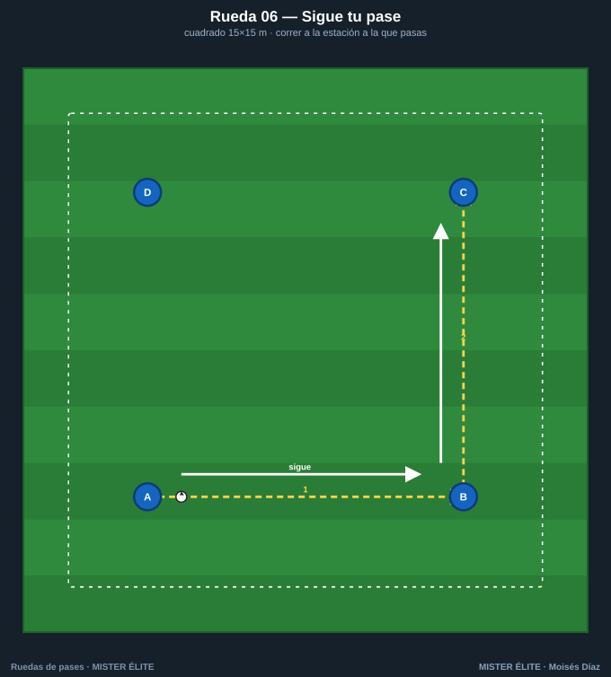
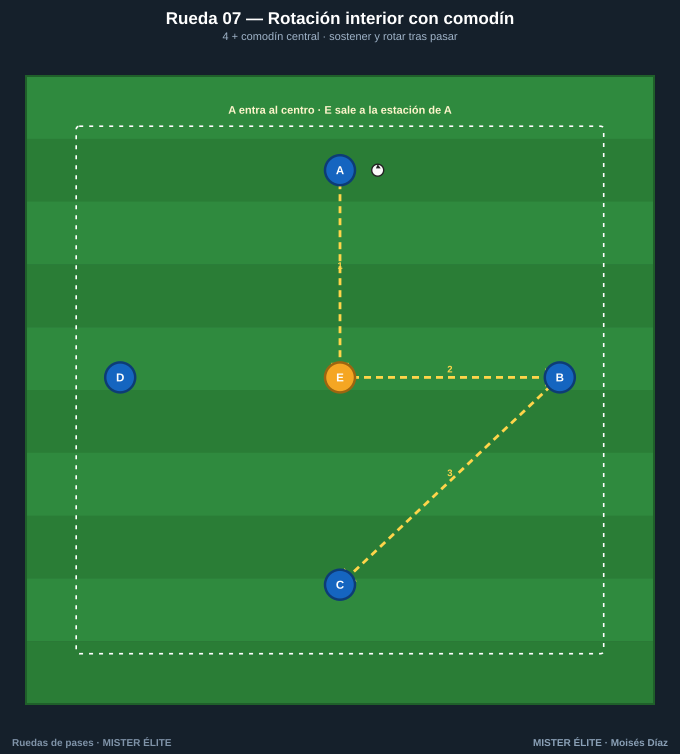
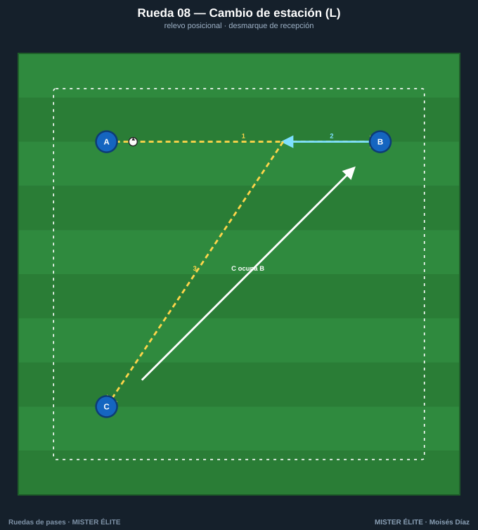
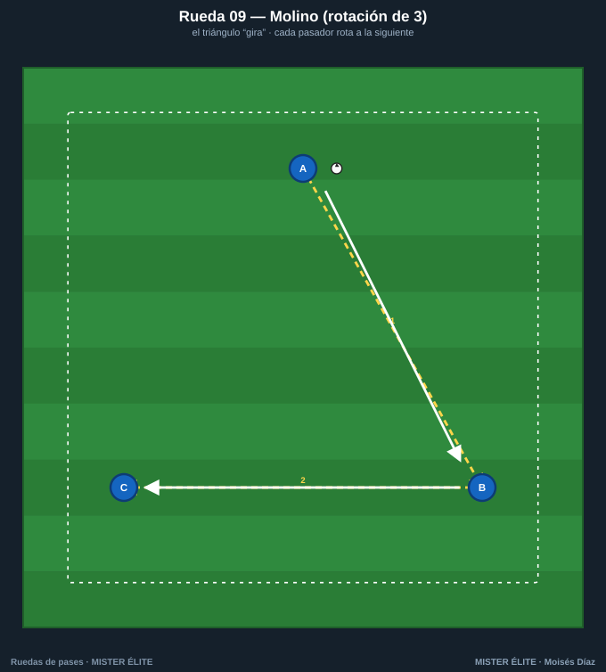
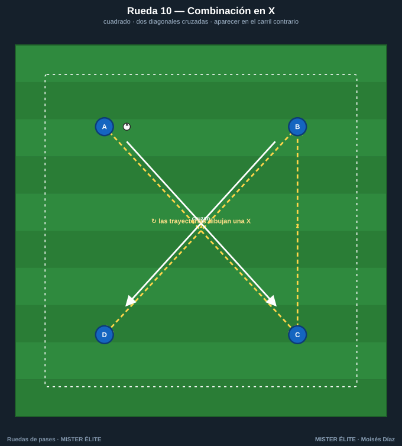

Familia 2 · Movilidad y rotación (06–10)
Ahora el jugador se mueve tras pasar. Se añade el desmarque, la rotación y la permuta: la rueda deja de ser estática y empieza a parecerse al juego, donde nadie se queda quieto después de dar el balón.
Coaching points de la familia: correr detrás del balón tras el pase · timing del desmarque · ocupar el espacio que deja el compañero · no chocar (comunicación).
Rueda 06 — Sigue tu pase

- Objetivo: automatizar la carrera tras el pase; ocupar la estación siguiente. El patrón base de movilidad.
- Secuencia: 1) A pasa a B y corre detrás del balón a la cola de B. 2) B a C y corre a C. Cadena continua.
- Medidas: cuadrado de 15×15 m, 2 por estación.
- Variante: doble balón · cambiar el sentido a la señal.
Rueda 07 — Rotación interior con comodín

- Objetivo: sostener el balón y rotar de posición tras pasar; juego con apoyo central.
- Secuencia: 1) A→E (central). 2) E deja de cara a B. 3) B→C. 4) A entra al centro y E sale a la estación de A.
- Medidas: círculo de ~16 m con comodín en el centro.
- Variante: dos comodines centrales · máximo 2 toques.
Rueda 08 — Cambio de estación (L)

- Objetivo: desmarque de recepción y relevo posicional (dejar tu sitio al compañero).
- Secuencia: 1) A→B. 2) B controla, conduce hacia A y deja su sitio. 3) B→C; C ocupa la estación que vació B.
- Medidas: brazos de la L de 12 m.
- Variante: conducción obligatoria de 3 m antes del pase · trabajar las dos piernas.
Rueda 09 — Molino (rotación de 3)

- Objetivo: rotación coordinada tipo carrusel; timing del apoyo.
- Secuencia: 1) A→B y A corre a la posición de B. 2) B→C y B corre a la posición de C. 3) C→A. El triángulo "gira".
- Medidas: triángulo de 12 m.
- Variante: invertir el giro · a 1 toque manteniendo la rotación.
Rueda 10 — Cruce y permuta

- Objetivo: permutas y desmarques cruzados sin chocar; coordinación.
- Secuencia: 1) A→C (vertical por el centro). 2) C→B. 3) B→D (horizontal). 4) B y D permutan corriendo cruzados.
- Medidas: rombo de 16 m.
- Variante: permuta de las cuatro estaciones en cada vuelta · doble balón.